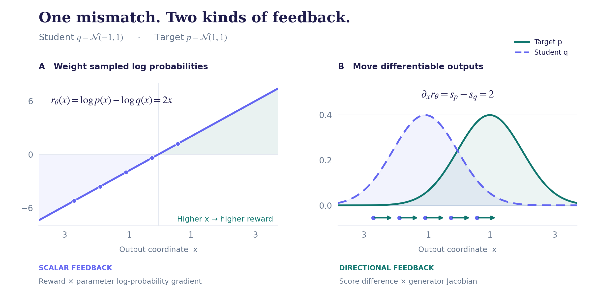
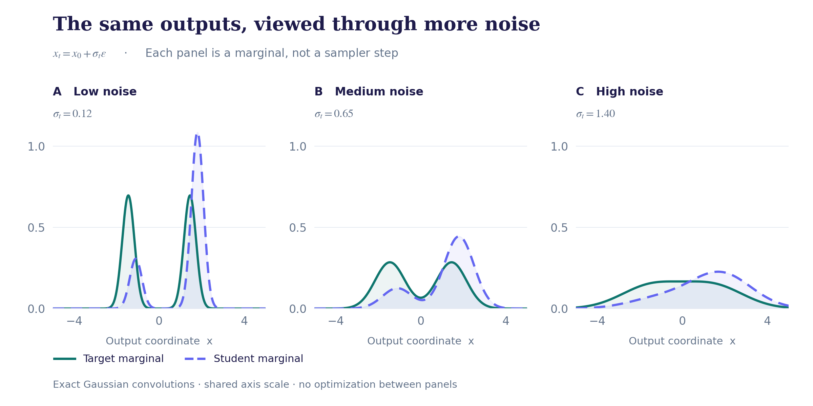

1. Why these updates are connected
A generator produces a distribution of outputs. Suppose we want that distribution to match a target. A divergence measures the mismatch:
First choose what to match. Distillation uses a teacher distribution; GANs use the real data distribution. In KL-regularized RL, reward reshapes a reference distribution, giving higher-reward outputs more weight. Each specifies a target in a different way.
Next choose how to measure the mismatch. We will use reverse KL. With a suitable adversarial loss, GAN training can optimize this same divergence toward real data.
Finally choose how to compute the update. Evaluating probabilities lets us reward sampled outputs. Differentiating through outputs lets us move them toward lower loss. For Gaussian predictions with the same fixed variance, averaging the sampling noise gives a mean-squared-error gradient.
Choose the target, choose the divergence, then choose how to differentiate it.
We will follow these choices to derive policy gradient, Gaussian mean matching, and sample movement using diffusion scores or a discriminator.
Our working example: reverse KL to a chosen target.
Weight sampled actions
01Estimate the policy gradient.
Average the noise → mean MSE.
Move generated outputs
03Estimate two density scores.
Differentiate a discriminator logit.
Notation: \(q_\theta\) is the student, \(p_T\) the teacher, and \(p\) a fixed target. Hold the prompt fixed; use sums for discrete outputs. Assume \(q_\theta\ll p\) (no student mass where the target has zero mass), finite required expectations, fixed support, and valid differentiation under the integral. Pathwise identities also require smooth densities and a differentiable sampler with parameter-independent base randomness. Density scores are \(s_q=\nabla_x\log q_\theta\) and \(s_p=\nabla_x\log p\).
2. RL: improve the policy through a scalar reward
For a complete output \(x\) and fixed reward \(r(x)\), optimize the policy \(q_\theta\) to increase expected reward:
This is REINFORCE. [1] A scalar reward suffices; no \(\nabla_x r\) is needed. Since \(\mathbb E_{q_\theta}[\nabla_\theta\log q_\theta]=0\), subtracting an output-independent baseline preserves the expected gradient. In trajectories, apply this identity conditionally at each state. Detach the baseline during the policy update. Positive weights favor an output in that gradient contribution; shared parameters determine the net change.
3. OPD: a teacher supplies an implicit reward
Choose a sequence-level reverse-KL distillation objective:
Negate the loss to align with RL's maximization convention:
The reward measures relative probability: even a plausible output may be overproduced by the student. MiniLLM explicitly uses this reverse-KL policy-gradient connection. [3]
Although this reward depends on \(\theta\), its extra derivative at fixed \(x\) is \(-\mathbb E_{q_\theta}[\nabla_\theta\log q_\theta]=0\). The cancellation holds in expectation under the current student. Thus we detach the sampled log-ratio weight in (3); arbitrary parameter-dependent rewards need not permit this.
Sequences need credit assignment
Use horizon \(H\), include EOS in the likelihood, and make the terminal state absorbing. For prefix \(h_k\), define the token reward and reward-to-go:
Past rewards contribute zero in expectation; future rewards remain because earlier tokens affect later prefixes. Keeping only \(r_k\) generally misses this credit assignment. [3] PPO adds old/new policy ratios and clipping to the policy-gradient framework; clipping is an optimizer choice, not a KL identity. [4]
Exactly what does a frozen-prefix token loss omit?
Let \(d_{\theta,k}(h)\) be the student's prefix distribution at step \(k\), and define \(D_k(\theta,h)=\mathrm{KL}(q_\theta(\cdot\mid h)\|p_T(\cdot\mid h))\). For the fixed horizon, the KL chain rule gives
For a two-step example, the student first chooses branch B with probability \(u=\operatorname{sigmoid}(\eta)\), versus the teacher's \(1/2\). At step two, the student's fixed probability of token 1 is \(1/2\) on both branches; the teacher's is \(1/2\) on A and \(0.9\) on B. Thus \(D_A=0\), \(D_B=\tfrac12\log(25/9)\approx0.5108\), and
Only the full gradient can change how often the student visits the mismatched branch. GKD further allows data mixing and length normalization. [2] Reproduce the example.
4. KL-regularized RL defines a target distribution
The connection also runs from RL to distillation. For fixed \(p_{\rm ref},r\) and \(\beta>0\), assume finite KL and expected absolute reward:
Reward tilts the reference toward preferred outputs. Substituting \(\log p^*=\log p_{\rm ref}+r/\beta-\log Z\) gives
Since \(Z\) is independent of \(\theta\), KL-regularized RL and reverse-KL distillation to \(p_T=p^*\) have the same optimizers. This does not guarantee that training reaches a global optimum, or that an arbitrary teacher equals \(p^*\).
DPO uses this reward–policy transformation, then adds a preference model to derive its pairwise loss. [5]
Two boundaries of the equivalence: plain RL and general environments
Plain RL lacks the reference/entropy term. Entropy regularization corresponds to a uniform reference on a finite action space; no normalized uniform reference exists on an unbounded continuous space.
The identity also holds for trajectories in a fixed environment, but the reward-tilted trajectory law may not be realizable under its stochastic dynamics. For fixed-prompt text generation, \(x\) can simply denote the whole response.
5. Gaussian OPD: policy gradient becomes mean MSE
For a Gaussian student and teacher with the same fixed covariance, the expected log-ratio policy gradient is a mean-MSE gradient. This follows from the Gaussian assumptions, not continuity alone.
First keep the cost and reward signs consistent
Define the cost \(c_\theta(a)=\log q_\theta(a)-\log p_T(a)=-r_\theta(a)\). For a fixed teacher, \(\partial_\theta c_\theta|_a=\partial_\theta\log q_\theta|_a\). Read the KL derivation backwards:
We added a zero expectation and applied the product rule, holding \(a\) fixed. Differentiating a reparameterized sample instead would add a path through \(a\).
Integrate out the Gaussian action noise
At a fixed context, let \(\sigma>0\) and \(\mu_T\) be independent of \(\theta\):
The sampled cost has a constant part and a part correlated with the sampled noise:
Multiply them and use \(\mathbb E[\epsilon]=0\), \(\mathbb E[\epsilon\epsilon^{\mathsf T}]=I\):
This removes action-noise variance at the fixed context; sampled prompts, states, and times still vary. A shared fixed \(\Sigma\succ0\) gives \(\tfrac12\delta^{\mathsf T}\Sigma^{-1}\delta\), with equal forward and reverse Gaussian KL. A trainable covariance adds covariance and entropy derivatives.
Flow-OPD and DiffusionOPD: which distribution is Gaussian?
The Gaussian is the next-state transition at a fixed student-visited state. DiffusionOPD directly matches transition means; Flow-OPD's v1 describes a clipped policy update with detached mean-matching rewards. [10] [11] Their Gaussian KL formulas agree, but their update rules differ.
For example, write a transition mean as \(\mu_\theta(h,t)=b(h,t)+k(t)v_\theta(h,t)\), with the same fixed \(b,k,\sigma_t\) for both models. Then
A noisy Euler step has \(b(h,t)=h\), \(k(t)=\Delta t\); an SDE conversion can change these coefficients. This matches conditional transitions, not final-image marginals. Detached rollout states give a local gradient; the full trajectory gradient also includes the state-distribution derivative in (4a).
What changes for a deterministic ODE sampler?
A deterministic transition is a point mass. Distinct point masses have infinite KL. We can introduce common Gaussian noise, or choose direct squared-error regression—as DiffusionOPD does for ODE transitions in Eq. (12). [10]
For fixed unequal means, KL diverges as \(\sigma\to0\), while \(\sigma^2\mathrm{KL}=\tfrac12\|\delta\|^2\) stays finite. An ODE with random initial latents can still produce a smooth, non-Gaussian final marginal.
6. From rewarding samples to moving samples
Now suppose the sample is continuous and generated by a differentiable map:
With fixed base law \(p_z\), hold \(z\) fixed and differentiate through the output. Assume \(q_\theta\) has a smooth density; a differentiable generator alone does not ensure this. Then
Normalization cancels the explicit density derivative. The remaining score difference passes through the generator Jacobian:
The ratio grades an output; its spatial derivative tells us how that grade changes as the output moves. For the same smooth continuous model, (3) and (8) have equal expected gradients, but different sample estimates. REINFORCE uses \(\nabla_\theta\log q_\theta\); diffusion uses \(\nabla_x\log q_\theta\). The latter does not differentiate through discrete token IDs.

Vector PDFFigure source
Gaussian check: mean movement and entropy
For \(q_\mu=\mathcal N(\mu,1)\) and \(p=\mathcal N(m,1)\), (6b) gives the ascent gradient \(m-\mu\). The pathwise field \(s_p-s_q=m-\mu\) gives the same result with zero variance in this mean-only example.
Allow the scale to change: \(q_{\mu,\ell}=\mathcal N(\mu,e^{2\ell})\), \(p=\mathcal N(m,v^2)\). Both estimators give
The \(+1\) in the scale component comes from student entropy. The numerical checks compare both components against the closed form and finite differences.
The Jacobian couples different outputs through shared parameters. A generator update therefore differs from moving each particle independently; see the flow note.
7. VSD / DMD: match noisy marginals
A generator's clean density may be intractable or nonexistent. Instead, compare its outputs with a target clean law \(p_T\) after applying the same Gaussian noise. Sample \(t,z,\epsilon\) independently from fixed distributions:
Measure notation includes singular clean laws such as point masses. Positive Gaussian noise gives smooth, positive densities; finite KL and integrable gradients still require assumptions, especially near zero noise.
These are noisy marginals of the final output population, not necessarily states along the student's sampling trajectory. Even a one-step generator has such marginals. Training samples levels from \(\rho\). Choosing (9) changes the objective; reparameterization changes how we differentiate it.

Vector PDFFigure source
Apply the pathwise identity at each noise level. Since \(\partial_\theta x_t=\alpha_tJ_\theta\), with \(s_{q,t}=\nabla_{x_t}\log q_{\theta,t}\) and \(s_{T,t}=\nabla_{x_t}\log p_{T,t}\),
Diff-Instruct explicitly formulates this integral KL. [7] Distribution matching distillation (DMD) derives a clean-distribution gradient and implements it with noisy scores, practical weights, and regression. [8] Equation (9) describes the ideal core with fixed time weights.
Where VSD fits
Variational score distillation (VSD) optimizes a distribution over 3D scenes. Rendering each scene at camera \(c\) induces a noisy image law; VSD matches it to a view-conditioned teacher, averaging over cameras and noise levels. Its Wasserstein flow is approximated by scene particles updated through renderer Jacobians. [6]
DMD updates a shared image generator instead. [8] They share the noisy-KL two-score field, while their parameterizations and optimization geometries differ.
Why there is a fake-score network
The teacher estimates \(s_{T,t}\). To estimate the current student score, hold the generator fixed and train an auxiliary denoiser on its outputs:
The conditional mean is optimal over all square-integrable predictors; a finite network may not attain it. Include prompt and camera conditioning where applicable. A sampled \(\epsilon\) generally differs from the marginal predictor \(\epsilon_q^*\).
Let \(\epsilon_T^*=-\sigma_t s_{T,t}\). Substituting exact predictors makes the sign explicit:
Capacity limits, optimization error, and a lagging fake model can bias the estimated gradient. [6] [7] [8]
8. GANs: learn the ratio, then differentiate it
If we can sample from both distributions, train a discriminator \(D_\psi\) to classify target samples as real and student samples as fake, with equal class weights:
The original GAN analysis gives this optimum. [12] Its logit recovers the log-density ratio:
Denoisers estimate two scores separately; the discriminator estimates a scalar ratio whose input gradient gives their difference. For noisy marginals, train \(D_\psi(x_t,t)\) using the same corruption kernel and time distribution for both populations.
In Figure 2, \(D^*(x)=\operatorname{sigmoid}(2x)\): its logit has derivative \(+2\), the same rightward field.
Which generator loss recovers reverse KL?
At the current student \(\theta_0\), suppose \(f_{\psi_0}=\log p-\log q_{\theta_0}\). Hold this fitted function fixed while differentiating through \(x=G_\theta(z)\). Choose the generator loss
This equality is local: the discriminator must track the changing student. f-GAN develops the broader choice of divergences in adversarial training. [13]
# Generator step: freeze discriminator parameters, keep its input gradient.
discriminator.eval()
for parameter in discriminator.parameters():
parameter.requires_grad_(False)
x = generator(z)
loss_ratio = -discriminator.logit(x).mean()
loss_ratio.backward() # backpropagate through discriminator INTO x
# Restore training mode and parameter gradients for the discriminator update.Keep the logit's input gradient: it produces the vector field. The two-score surrogate below instead computes that field explicitly, then detaches it.
Why standard GAN losses are not all reverse KL
Write \(D(x)=\operatorname{sigmoid}(f(x))\). With discriminator parameters fixed, the negative sample-space gradients of three generator losses are
| Generator loss \(\ell(x)\) | Descent field \(-\nabla_x\ell\) |
|---|---|
| Negative logit: \(-f(x)\) | \(\nabla_x f(x)\) |
| Minimax: \(\log(1-D(x))\) | \(D(x)\nabla_x f(x)\) |
| Non-saturating: \(-\log D(x)\) | \((1-D(x))\nabla_x f(x)\) |
At the ideal discriminator, \(\nabla_x f=s_p-s_q\). Different sample weights can yield different parameter directions. The optimized minimax game is \(-\log4+2\mathrm{JS}(p\|q_\theta)\), while the non-saturating alternative changes the generator loss. [12] Only the negative-logit row gives (14).
This is supervised ratio estimation. [14] The exact derivative identity assumes smooth positive densities and an ideal classifier. Good classification alone need not give accurate spatial derivatives. Separated supports can make logits diverge; Gaussian smoothing restores overlap, not necessarily accurate estimates.
9. Implementation: where gradients flow
A sampled reverse-KL policy-gradient surrogate
# x is sampled from exactly q_theta, with no sampling gradient.
# Sum response-token log probabilities, including EOS; mask padding.
logq = student_log_prob(x)
logp = teacher_log_prob(x)
reward = (logp - logq).detach()
loss_pg = -(reward * logq).mean()
loss_pg.backward()Use one sequence log probability per example and a shared output/tokenization space. Sampling must match the evaluated \(q_\theta\); temperature, truncation, or an old policy require corresponding adjustments. Importance correction needs adequate support. Dividing by variable response length generally changes the objective; a fixed divisor only rescales it.
Detach the sampled weight, not the student inside an explicitly summed token KL. Simply averaging \(\log q_\theta-\log p_T\) on detached samples and calling backward misses the sampling-distribution derivative.
A two-score generator surrogate
# Generator update: both score estimates are evaluated, then detached.
x0 = generator(z)
xt = alpha * x0 + sigma * noise
with no_grad():
grad_xt = w * (fake_score(xt, t) - teacher_score(xt, t))
loss_dm = (grad_xt * xt).flatten(1).sum(1).mean()
loss_dm.backward() # d xt / d theta supplies alpha * the generator JacobianBoth networks return density scores; fixed time weights broadcast per sample. Detach the entire score difference, including its input dependence, while keeping the final \(x_t\) differentiable. Train the fake denoiser separately on detached generated images. This surrogate supplies a gradient; its scalar value is not KL.
Where practical DMD departs from the ideal objective
The target law in (9) need not equal a finite-step teacher sampler's output law. Score error, numerical solvers, and guidance can separate them. Even normalized guided densities at each time need not be forward-noised marginals of one common clean law.
DMD's Eq. (8) weights updates by a factor proportional to \((\sigma_t^2/\alpha_t)/\operatorname{MAE}(\hat x_T(x_t,t),x_0)\), where \(\hat x_T\) is the teacher's denoised prediction. [8] This depends on the sample. Detaching it does not turn it into fixed \(w(t)\), or establish the gradient of (9).
DMD also uses paired regression. [8] DMD2 removes it, changes fake-score update timescales, and adds an adversarial loss with real data. [9] See the method comparison for more.
10. A compact map of the connection
| View | Training signal | Update |
|---|---|---|
| Policy gradient / discrete OPD | External reward or teacher–student log ratio | Weight \(\nabla_\theta\log q_\theta\) by a scalar return |
| Gaussian OPD | Local KL with shared fixed covariance | Analytic mean-MSE gradient |
| VSD / DMD | Scores of noisy output distributions | Backpropagate a two-score field |
| GAN / discriminator | A learned log-density ratio | Backpropagate the logit, weighted by the generator loss |
For a new method, ask which distribution it compares, which loss it minimizes, and how it computes the gradient.
Numerical checks cover sequence gradients, Gaussian PG-to-MSE, entropy, noisy scores, and GAN losses using quadrature and finite differences.
References
[1] Ronald J. Williams. Simple statistical gradient-following algorithms for connectionist reinforcement learning. Machine Learning 8, 229–256, 1992. The REINFORCE estimator.
[2] Rishabh Agarwal, Nino Vieillard, Yongchao Zhou, Piotr Stanczyk, Sabela Ramos, Matthieu Geist, and Olivier Bachem. On-Policy Distillation of Language Models: Learning from Self-Generated Mistakes. ICLR 2024. See §3.1 for GKD and §5 for the distinction from sequence-level policy-gradient distillation.
[3] Yuxian Gu, Li Dong, Furu Wei, and Minlie Huang. MiniLLM: Knowledge Distillation of Large Language Models. ICLR 2024; linked to the conference-era v2. See §2.1–2.2 and Appendix A.2–A.3 for reverse KL, policy gradient, and future-reward decomposition.
[4] John Schulman, Filip Wolski, Prafulla Dhariwal, Alec Radford, and Oleg Klimov. Proximal Policy Optimization Algorithms. 2017. See §3 for the clipped surrogate objective.
[5] Rafael Rafailov, Archit Sharma, Eric Mitchell, Stefano Ermon, Christopher D. Manning, and Chelsea Finn. Direct Preference Optimization: Your Language Model is Secretly a Reward Model. NeurIPS 2023. See §4 and Appendix A.1 for the reward-tilted optimal policy and KL rearrangement.
[6] Zhengyi Wang, Cheng Lu, Yikai Wang, Fan Bao, Chongxuan Li, Hang Su, and Jun Zhu. ProlificDreamer: High-Fidelity and Diverse Text-to-3D Generation with Variational Score Distillation. NeurIPS 2023. See §3 and Appendix C for the distribution over scene parameters and its particle update.
[7] Weijian Luo, Tianyang Hu, Shifeng Zhang, Jiacheng Sun, Zhenguo Li, and Zhihua Zhang. Diff-Instruct: A Universal Approach for Transferring Knowledge From Pre-trained Diffusion Models. NeurIPS 2023. See §3 for integral KL and the generator gradient.
[8] Tianwei Yin, Michaël Gharbi, Richard Zhang, Eli Shechtman, Fredo Durand, William T. Freeman, and Taesung Park. One-step Diffusion with Distribution Matching Distillation. CVPR 2024. See §3.2–3.4 and Appendix F for the two-score update, regression term, and guidance.
[9] Tianwei Yin, Michaël Gharbi, Taesung Park, Richard Zhang, Eli Shechtman, Fredo Durand, and William T. Freeman. Improved Distribution Matching Distillation for Fast Image Synthesis. NeurIPS 2024. DMD2: critic update timescales, removal of paired regression, and adversarial training.
[10] Quanhao Li et al. DiffusionOPD: A Unified Perspective of On-Policy Distillation in Diffusion Models. 2026, v1. See §3.2, Eqs. (10)–(12), for Gaussian transition KL and the separate deterministic regression objective; §3.3 discusses gradient estimators.
[11] Zhen Fang et al. Flow-OPD: On-Policy Distillation for Flow Matching Models. 2026, v1. See §5.1.1, Eqs. (8)–(11), for Gaussian KL, detached rewards, and the clipped policy surrogate.
[12] Ian J. Goodfellow et al. Generative Adversarial Nets. NeurIPS 2014. Proposition 1 gives the optimal discriminator; §4.1 connects the minimax game to Jensen–Shannon divergence.
[13] Sebastian Nowozin, Botond Cseke, and Ryota Tomioka. f-GAN: Training Generative Neural Samplers using Variational Divergence Minimization. NeurIPS 2016. A variational framework for adversarial training with different f-divergences.
[14] Ian Goodfellow. NIPS 2016 Tutorial: Generative Adversarial Networks. 2017. See §3.2 and §8.1 for generator objectives and supervised density-ratio estimation.